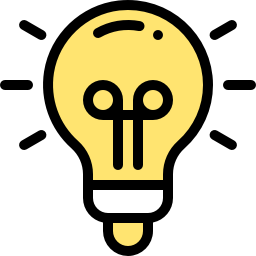

Hasta ahora hemos hablado de contaminación, como elemento negativo, pero ¿podemos contaminar positivamente? ¿podemos incidir en otros?
La tarea que se propone, que hemos denominado 'Contamíname', tiene esa finalidad. Vamos a plasmar nuestra preocupación y buscar soluciones. Y vamos a difundirlas. Pondremos en esta práctica en uso nuestros saberes adquiridos y además, trabajaremos habilidades de planificación y comunicación y funciones ejecutivas en general.
La tarea es un proyecto, pero para contribuir a las pautas de diseño universal de aprendizaje, dividiremos en actividades, de forma que la información y tarea a corto plazo sea menor. Lo hemos dividido en 4 actividades claramente diferenciadas, pero partes de un todo, coincidente cada una con una sesión.
La primera actividad: 'La idea'
La actividad de propone con flexibilidad a la hora de crear el/los grupos y también en la elección de medio, lo que dificultará su seguimiento y evaluación. Pero esperamos que por contra, incida directamente en la motivación de nuestro alumnado.
En la primera sesión, continuaremos en nuestra fase de desarrollo. Vamos a Pensar y actuar.

Icon by Freepik
 Iniciamos la clase escuchando/leyendo la canción contamíname:
Iniciamos la clase escuchando/leyendo la canción contamíname: